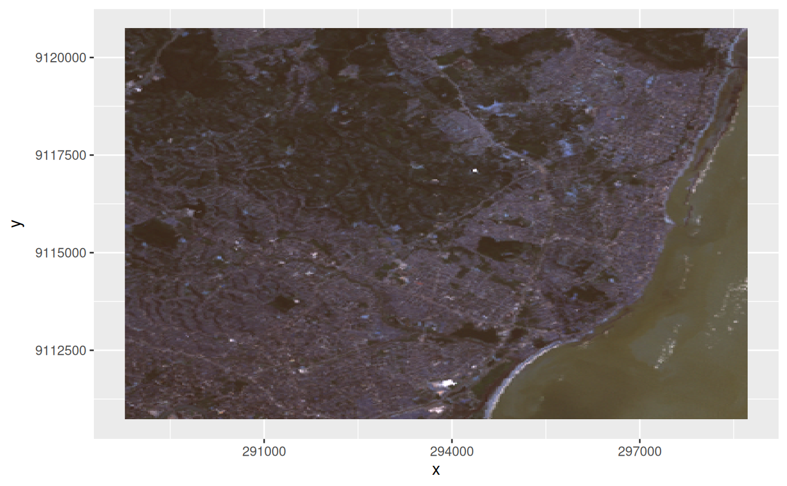

ggplot geom for stars objects
geom_stars(mapping = NULL, data = NULL, ..., downsample = 0, sf = FALSE)
theme_stars(...)see geom_raster
see geom_raster
see geom_raster
downsampling rate: e.g. 3 keeps rows and cols 1, 4, 7, 10 etc.; a value of 0 does not downsample; can be specified for each dimension, e.g. c(5,5,0) to downsample the first two dimensions but not the third.
logical; if TRUE rasters will be converted to polygons and plotted using geom_sf.
geom_stars returns (a call to) either geom_raster, geom_tile, or geom_sf, depending on the raster or vector geometry; for the first to, an aes call is constructed with the raster dimension names and the first array as fill variable. Further calls to coord_equal and facet_wrap are needed to control aspect ratio and the layers to be plotted; see examples.
system.file("tif/L7_ETMs.tif", package = "stars") %>% read_stars() -> x
library(ggplot2)
ggplot() + geom_stars(data = x) +
coord_equal() +
facet_wrap(~band) +
theme_void() +
scale_x_discrete(expand=c(0,0))+
scale_y_discrete(expand=c(0,0))
